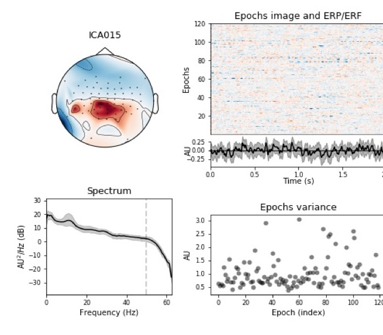
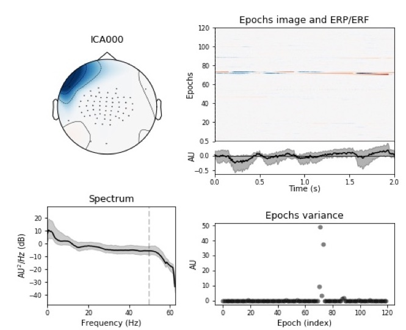
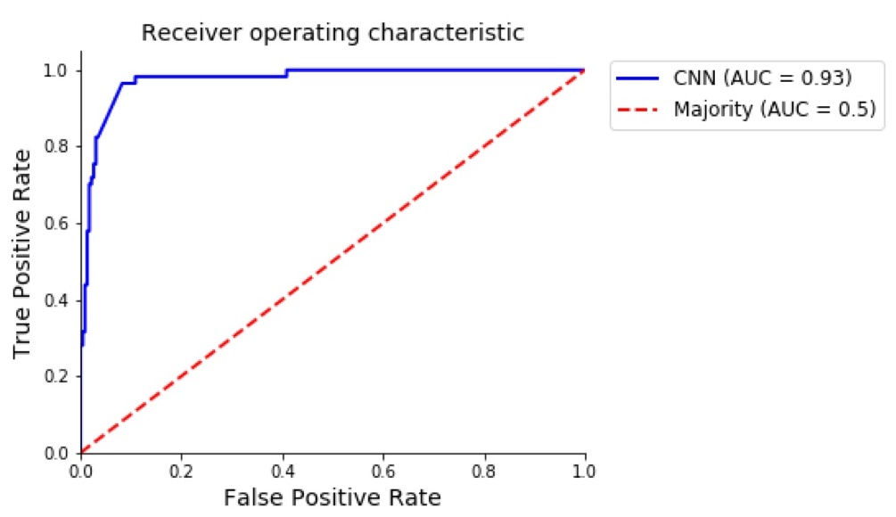

Abstract
Electroencephalography (EEG) is a commonly used method for monitoring brain activity. Automating an EEG signal processing pipeline is imperative to the exploration of real-time brain computer interface (BCI) applications. EEG analysis demands substantial training and time for removal of distinct unwanted independent components (ICs), generated via independent component analysis, corresponding to artifacts. The considerable subject-wise variations across these components motivates defining a procedural way to identify and eliminate these artifacts. We propose DeepIC-virtual, a convolutional neural network (CNN) deep learning classifier to automatically identify brain components in the ICs extracted from the subject’s EEG data gathered while they are being immersed in a virtual reality (VR) environment. This work examined the feasibility of DL techniques to provide automated ICs classification on noisy and visually engaging upright stance EEG data. We collected the EEG data for six subjects while they were standing upright in a VR testing setup simulating pseudo-randomized variations in height and depth conditions and induced perturbations. An extensive 1432 IC representation images data set was generated and manually labelled via an expert as brain components or one of the six distinct removable artifacts. The supervised CNN architecture was utilized to categorize good brain ICs and bad artifactual ICs via generated images of topographical maps. Our model categorizing good versus bad IC topographical maps resulted in a binary classification accuracy and area under curve of 89.20% and 0.93 respectively. Despite significant imbalance, only 1 out of the 57 present brain ICs in the withheld testing set was miss-classified as an artifact. These results will hopefully encourage clinicians to integrate BCI methods and neurofeedback to control anxiety and provide a treatment of acrophobia, given the viability of automatic classification of artifactual ICs.
Core contributions
- 1DeepIC-virtualA CNN that sorts EEG independent components into usable brain signals and artifacts to remove.
- 2Real-world, noisy EEGData recorded while people stood in VR, facing virtual heights and physical perturbations.
- 3A labelled dataset1,432 components labelled by an expert as brain or one of six artifact types.
- 4Scalp map is enoughThe network sees only the scalp map, while the expert used all four panels.
- 5Brain components kept89.2% accuracy and an AUC of 0.93; only 1 of 57 brain components was wrongly discarded.
- 6Toward real-time BCIAutomatic cleaning is a step toward live neurofeedback, for example in therapy for fear of heights.
Method
1EEG in virtual reality
Six people (five young adults and one older adult) stood on a NeuroCom force plate wearing an HTC Vive headset and a 64-channel EEG cap. In each of four 4-minute trials, the virtual scene moved them between ground level and heights or depths of up to 7.5 m; in two trials, the platform also tilted their toes down by 10 degrees. EEG was recorded at 1000 Hz.
2Brain or artifact?
The filtered EEG was split by independent component analysis (ICA) into components. An expert then labelled each one as a brain component or an artifact (muscle, eye, line noise or other), using its scalp map, spectrum, event-related potential and time course. After removing 205 components that were too hard to call, 285 brain and 1,147 artifact components remained, a 1:4 imbalance.
Show a rejected muscle artifact (paper Fig. 2)

3DeepIC-virtual
The classifier takes only the scalp map image (135 × 165 pixels). It has 8 convolutional layers with batch normalization, dropout and max pooling, then 2 fully connected layers. To handle the imbalance, we weighted the loss by class and made sure every batch held both classes. We trained on 80% of the maps (1,145) and tested on a withheld 20% (287).
Results
- 89.2% accuracy, AUC 0.93 on the withheld test set.
- Brain signals are rarely thrown away: 56 of 57 brain components were kept; most errors were artifacts let through, which an expert can still remove.
- Shape matters: brain components form broad, connected patterns on the scalp, so the scalp map alone carries enough information.
| Test set (287 maps) | Actual brain | Actual artifact |
|---|---|---|
| Predicted brain | 56 | 30 |
| Predicted artifact | 1 | 200 |

Talk
BibTeX
@inproceedings{kaur2020automatic,
title = {Automatic Identification of Brain Independent Components
in Electroencephalography Data Collected while Standing
in a Virtually Immersive Environment -- A Deep
Learning-Based Approach},
author = {Kaur, Rachneet and Korolkov, Maxim and
Hernandez, Manuel E and Sowers, Richard},
booktitle = {42nd Annual International Conference of the IEEE
Engineering in Medicine \& Biology Society (EMBC)},
pages = {95--98},
year = {2020},
doi = {10.1109/EMBC44109.2020.9175741}
}Acknowledgments
This work would not have been possible without the financial support of JUMP ARCHES. The authors would like to especially acknowledge the work of members of the Mobility and Fall Prevention Research Lab team.